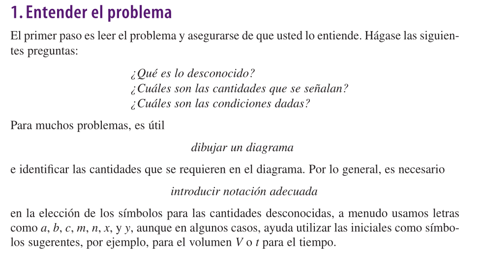
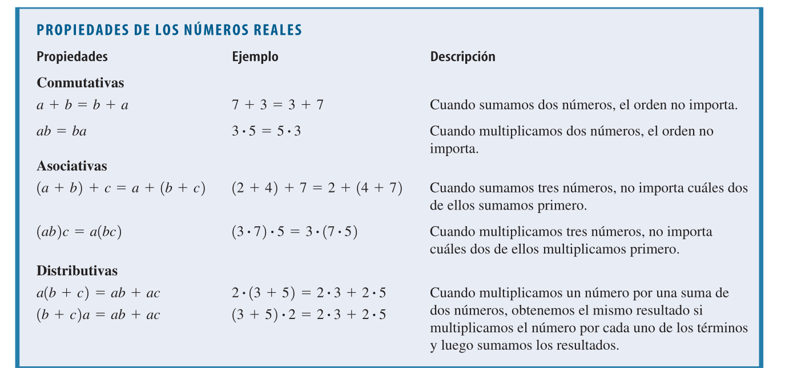
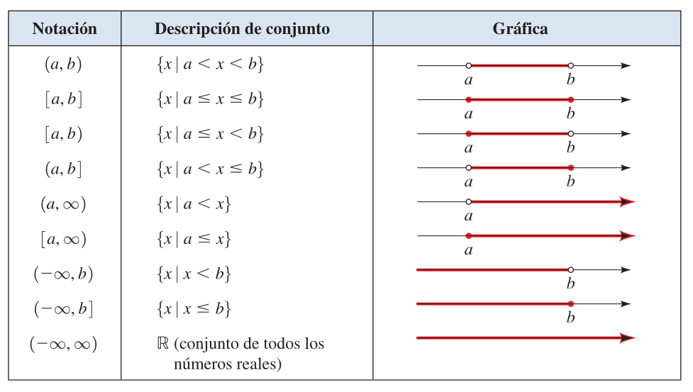
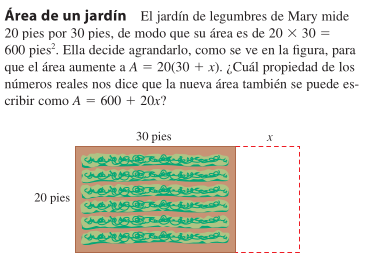
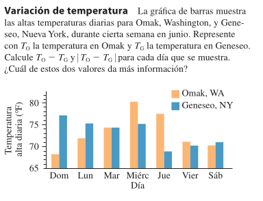
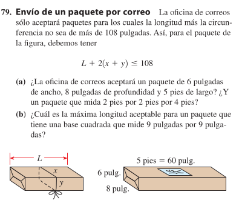

Estructuras Numéricas: Números Naturales, Enteros y Operaciones
Introducción
Objetivo: Discutir el uso de sistemas numéricos en la cuantificación de elementos y formas en diferentes contextos de la ingeniería y las ciencias.
Problemas
La capacidad de resolver problemas es una habilidad muy valorada en diversos aspectos de nuestra vida y es, sin duda, una parte esencial de cualquier curso de matemáticas. No existen reglas estrictas que garanticen el éxito en la solución de problemas. No obstante, en este prólogo, se proponen una serie de pasos generales para el proceso de resolución de problemas y se presentan principios útiles para resolver ciertos tipos de problemas. Estas medidas y principios hacen explícito el sentido común. Han sido adaptados del perspicaz libro de George Polya, “How to Solve It”.

Ejemplo
Rapidez promedio: Una conductora se embarca en un viaje. Durante la primera mitad de la distancia, ella conduce al ritmo pausado de 30 km/h, durante la segunda mitad conduce a 60 km/h. ¿Cuál es su rapidez promedio en este viaje?
Solución
Paso 1: Definir las variables
Denotemos la distancia total del viaje como ( D ). Entonces, cada mitad de la distancia es ( ).
Paso 2: Calcular el tiempo para cada mitad del viaje
Para la primera mitad de la distancia (( )) a una velocidad de 30 km/h: \[ t_1 = \frac{\frac{D}{2}}{30} = \frac{D}{60} \text{ horas} \]
Para la segunda mitad de la distancia (( )) a una velocidad de 60 km/h: \[ t_2 = \frac{\frac{D}{2}}{60} = \frac{D}{120} \text{ horas} \]
Paso 3: Calcular el tiempo total del viaje
El tiempo total del viaje es la suma de los tiempos para cada mitad: \[ t_{\text{total}} = t_1 + t_2 = \frac{D}{60} + \frac{D}{120} \]
Para sumar estas fracciones, encontramos un denominador común: \[ t_{\text{total}} = \frac{2D}{120} + \frac{D}{120} = \frac{3D}{120} = \frac{D}{40} \text{ horas} \]
Paso 4: Calcular la velocidad promedio
La velocidad promedio ( v_{} ) se define como la distancia total dividida por el tiempo total: \[ v_{\text{promedio}} = \frac{D}{t_{\text{total}}} = \frac{D}{\frac{D}{40}} = 40 \text{ km/h} \]
Los Números Reales
- Números naturales
- Números enteros
- Números racionales
- Números irracionales
- Números reales
Operaciones con Números Reales
- Suma de números racionales y reales
- Multiplicación de números racionales y reales

Recta Real e Intervalos
- Recta real: La recta real es una línea infinita que contiene todos los números reales.
- Intervalos: Son subconjuntos de la recta real que contienen todos los números entre dos puntos. Los intervalos pueden ser abiertos o cerrados.
- Intervalos abiertos: Intervalos que no incluyen los puntos extremos.
- Intervalos cerrados: Intervalos que incluyen los puntos extremos.
- Valor absoluto: El valor absoluto de un número real es la distancia del número al origen en la recta real.
Su definición es: \[ |x| = \left\{ \begin{array}{ll} x & \text{si } x \geq 0 \\ -x & \text{si } x < 0 \end{array} \right. \]
Ejercicios
Ejercicio 1: Suma y Ruptura de Paréntesis
Simplifica la siguiente expresión: \[ (25 + 48 - 17) + (37 - 52 + 89) - (64 + 23 - 31) \]
Ejercicio 2: Multiplicación y Ruptura de Paréntesis
Simplifica la siguiente expresión: \[ (3 \cdot 7 - 5) \cdot (2 \cdot 4 + 6) \]
Ejercicio 3: División y Ruptura de Paréntesis
Simplifica la siguiente expresión: \[ \frac{(144 - 36)}{(12 + 4)} \div \frac{(81 - 9)}{(27 - 18)} \]
Ejercicio 4: Suma de Números Racionales
Simplifica la siguiente expresión: \[ \frac{15}{28} + \frac{22}{35} \]
Ejercicio 5: Multiplicación de Números Racionales
Simplifica la siguiente expresión: \[ \frac{8}{15} \cdot \frac{25}{32} \]
Problemas de Aplicación
Problema 1: Aplicación de Aritmética y Geometría
El área de un triángulo es de \(15\sqrt{2}\) cm². Si su base mide \(15\sqrt{8}\) cm, ¿cuál es su altura? Usa la fórmula del área del triángulo $ A = $.
Problema 2: Aplicación de Proporciones y Porcentajes
Una solución salina contiene 30 gramos de sal disueltos en 1200 ml de agua. Si se desea preparar 2000 ml de una solución con la misma concentración de sal, ¿cuántos gramos de sal se necesitarán?
Subconjuntos de Números Reales e Intervalos en la Recta Real

Aplicación de Intervalos en la Recta Real
Describa los siguientes intervalos en la recta real:
- \(\{x: -3 < x < 5\}\)
- \(\{x: x \leq -2\}\)
- \(\{x: x \geq 4\}\)
- \(\{x: -1 \leq x < 3\}\)
- \(\{x: x-1 \leq 0\}\)
- \(\{x: x+2 > 0\}\)
- \(\{x: -2 < x \leq 3\}\)



Exponentes, radicales y logaritmos
Exponentes: Un exponente es un número que indica cuántas veces se multiplica un número por sí mismo.
Radicales: Un radical es una expresión que involucra una raíz cuadrada, cúbica, etc.
Logaritmos: Un logaritmo es una función matemática que invierte la operación de la exponenciación.
Ejemplo
\[5*5*5*5*5 = 5^5\] \[\sqrt{25} = 5\] \[\log_{10} 100 = 2\]
Podemos generalizar la relación entre exponentes, radicales y logaritmos de la siguiente manera:
\[a^b = c \Rightarrow b = \log_a c\] \[\sqrt[n]{a} = b \Rightarrow a = b^n\]
Propiedades de los Exponentes
- Multiplicación de exponentes: \(a^m \cdot a^n = a^{m+n}\)
- División de exponentes: \(\frac{a^m}{a^n} = a^{m-n}\)
- Potencia de una potencia: \((a^m)^n = a^{m \cdot n}\)
Por notación los radicales se pueden expresar como exponentes
\[\sqrt[n]{a} = a^{\frac{1}{n}}\]
Propiedades de los Radicales
Multiplicación de radicales: \(\sqrt[n]{a} \cdot \sqrt[n]{b} = \sqrt[n]{a \cdot b}\)
División de radicales: \(\frac{\sqrt[n]{a}}{\sqrt[n]{b}} = \sqrt[n]{\frac{a}{b}}\)
Potencia de un radical: \((\sqrt[n]{a})^m = \sqrt[n]{a^m}\)